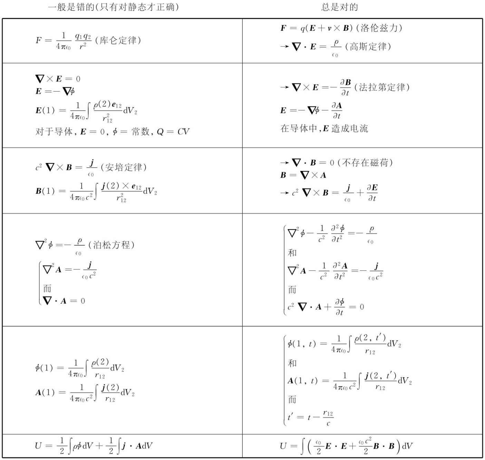

我们现在处于探索静场这一主题的末尾了。在这一章中，我们已经冒险地开始接近必须对付场随时间变化时所发生的情况。我们过去处理磁场能量时，仅仅依靠躲入相对性论证的避难所才逃避了它。即使如此，我们对能量问题的处理还是多少带着人为性和也许甚至是神秘性，因为曾经忽略了实际上运动的线圈必定产生变化的场这个事实。现在正是学习处理随时间变化的场——电动力学这一门学科的时候。我们将在下一章中做这件事。然而，首先将要强调下面几点。
尽管在这一课程中，我们是从一组完整而又正确的电动力学方程的表达方式出发的，但我们立刻开始学习某些不完整的部分——因为那是比较容易的。从静场的简单理论出发，并只在后来才逐步进入包括动态场在内的更复杂的理论，是有很大优越性的。马上要学习的新材料比较少，因而也就有时间给你去发展智力，为更加艰巨的任务做准备。
但在我们开始了解全部事情之前的这一过程中会存在这样的危险性，我们以这种方式学习过的那些不完整真理可能变成了根深蒂固的东西并误认为是全部真理——把那些正确的与那些有时才是正确的理论互相混淆起来。因此，我们在表15-1中提供一个我们已经接触过的重要公式的总结，把那些普遍正确的与那些只有对静态才正确、而在动态则是错误的东西区别开来。这个总结表也部分地表达了我们今后的动向，因为在今后处理动态时就将详细地发展此刻我们仅仅必须提出来而没有加以证明的那些东西。
表 15-1
那些用箭头（→）标明的方程都是麦克斯韦方程。
对这张表做一些说明可能会有用处。首先，你应该注意到，我们最初处理的那些方程都是正确 的方程——在那里并没有给你错误的印象。电磁力（常称为洛伦兹力 ）F=q（E+v×B）是正确 的。只有库仑定律才是错误的，它仅适用于静态。关于E和B的四个麦克斯韦方程也是正确的。当然，那些我们对静态取的方程则是错的，因为已删去了所有含有时间微商的项了。
高斯定律▽·E=ρ/∈0 依然正确，但E的旋度一般并不 等于零。所以E不能总是等于一个标量——静电势——的梯度。我们将看到标势依然保存，但它是一个随时间变化着的量了，必须与矢势一起配合才能用作对电场的完整描述。所以，那些支配这个新标势的方程也必然都是新的。
我们也必须把在导体里E等于零的概念丢掉。当场正在变化时，导体里的电荷一般没有时间安排它们本身使得电场为零。它们被迫运动，但却永远达不到平衡。唯一普遍的说法是：导体里的电场产生了电流。所以在变化的场中导体并不是 一个等势体。由此可知，电容器的概念不再是准确的。
由于不存在磁荷，所以B的散度就永远 为零，因此，B总可以等于▽×A（一切都不变）。但B的产生不仅来自电流：▽×B正比于电流密度加上 一个新的项∂E/∂t。这意味着，A由一个新的方程同电流相联系，而且也同ϕ有关。如果为了我们自身的方便而利用对▽·A进行选择的自由，则可以把关于A或ϕ的方程安排成一种简单而又优美的形式。因此，建立c2 ▽·A=-∂ϕ/∂t的条件，就能使有关A或ϕ的微分方程表现出如表中所列的形式。
A和ϕ这两种势仍可通过对电流和电荷的积分而求得，但已不同 于静态积分。然而，最令人惊异的是，真实的积分很像静态的积分，只有一个小小的、在物理方面引人注意的修改。当我们计算积分求某一点、比如图15-10中的点（1）的势时，就必须使用较早时刻 t′=t-r12 /c、位于点（2）处的j和ρ值。正如你所预期的，影响以速率c从点（2）传播至点（1）。用这一点小改变，人们就能求解关于变化电流和电荷的场。因为一旦我们知道了A和ϕ，就能像以前那样从▽×A得到B，而又从-▽ϕ-∂A/∂t得到E。
图15-10 通过把在游动点（2）处源的每个体积元中较早时刻t-r12 /c的电流和电荷的贡献相加起来，而给出t时刻点（1）处的势
最后，你将注意到，有些结果——比如，在电场中的能量密度为∈0 E2 /2——对于电动力学与对于静电磁学一样都是正确的。你应当不会误解以致认为这完全是“自然”的。在静态中导出的任何公式的正确性都必须在动态情况下再度加以论证。一个相反的例子是，由ρϕ的体积分所表达的有关静电能的表示式，这个结果仅仅 对于静态才正确。
在适当的时候我们将更加详细地考虑上述所有这些内容，但记住这个总结表也许是有用的，这样你就会知道哪些可以忘记，哪些作为永远正确的东西应该记住。
[1] 如果B是从图面向外，则根据我们曾对其下过的定义，通量为正，而因电子的电荷q为负，所以x0 为正。